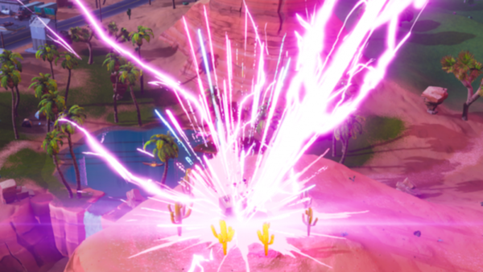
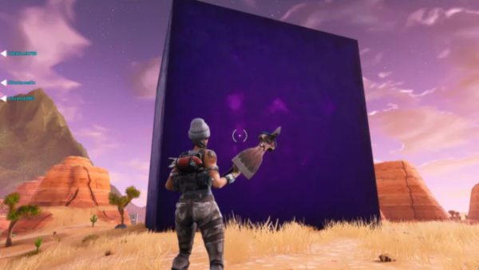

Nintendo é a publicadora de jogos que mais vendeu em 2018, nos EUA

O sucesso da Nintendo com o Switch continua impressionante. De acordo com a NPD Group, empresa especializada em análise de mercado, a Nintendo é a publicadora de jogos que mais vendeu nos EUA durante o mês de julho.
E em 2018 em geral, pelo menos até o momento. O Nintendo Switch foi o console que mais vendeu nos Estados Unidos durante o mês de julho, tanto em unidades vendidas quanto em lucro, Tornando este o sétimo mês do aparelho no topo da lista, desde que foi lançado em março de 2017. Foi também o único console que teve um aumento de arrecadação em comparação com julho do ano passado, com quase 70% de crescimento. Ainda segundo o NPD, o jogo Octopath Traveler, para o Switch, foi o jogo mais vendido durante o mês de julho nos EUA.
Entre os dez mais vendidos, também estão os títulos Mario Kart 8 (3º colocado), The Legend of Zelda: Breath of the Wild (5º), Super Mario Odyssey (7º) e Mario Tennis Aces (10º). Considerando que, no caso dos jogos da Nintendo não são consideradas as vendas digitais, estes jogos provavelmente foram ainda melhores do que o que foi levantado pela pesquisa. Os outros jogos da lista de mais vendidos de julho são: GTA V (2º colocado), Crash Bandicoot: N. Sane Trilogy (4º), Far Cry 5 (6º), The Crew 2 (8º) e Rainbow Six: Siege (9º).
Veja alguns destaques da plataforma Aqui
Relâmpagos invadiram Fortnite e ninguém sabe o motivo (ainda)
Eles apenas atingiam o chão e faziam um barulhão, mas recentemente, fizeram mais do que isso. Em um dos raios vindos da fenda, um cubo roxo, gigante e indestrutível apareceu — e não, ninguém ainda descobriu o motivo. Veja:

Cinematic POV of the mysterious rift/cube event #Fortnite pic.twitter.com/wCRuqKcuPF
— LootLake.net | Everything Fortnite Battle Royale (@LootLakeBR) 24 de agosto de 2018
E não para por aí. Os jogadores começaram a perceber que eles caíam sempre nos mesmos lugares e acabaram destruindo várias montanhas rochosas. E isso também é um mistério. Ninguém sabe o motivo para os relâmpagos estarem atrapalhando o mata-mata dos jogadores, mas apostamos que será uma bela atualização com novos recursos para a quinta temporada. Seria um mapa com um clima chuvoso? Uma nova “arma”? Ou um evento do Thor?
Fortnite está disponível gratuitamente para PlayStation 4, Xbox One, PC e Nintendo Switch.
Fã cria vídeo comparando gráficos de Red Dead Redemption com sua sequência
Depois de oito anos, a sequência de Red Dead Redemption está prestes a ser lançada, e as melhorias nos gráficos e na jogabilidade da franquia já começaram a ser exibidos em trailers e vídeos E um fã decidiu criar um vídeo de comparação entre Red Dead Redemption 2 e seu antecessor, para analisarmos as imagens lado-a-lado e ficarmos boquiabertos com o que os desenvolvedores melhoraram. Assista em destaque logo acima!.